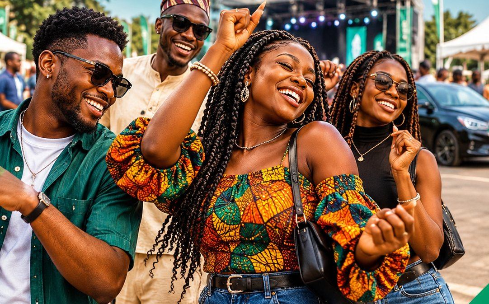
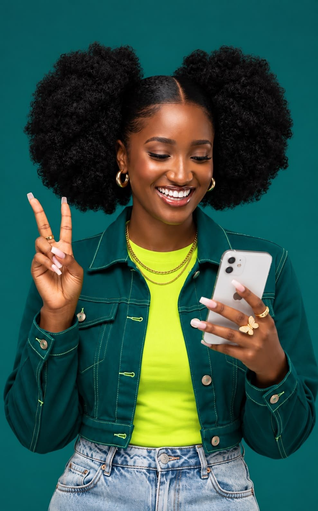
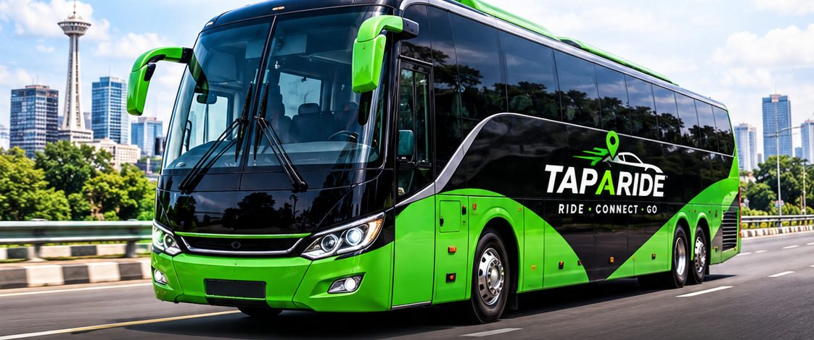

National Innovation Challenge · Abuja Tech Week 2026
One app to book verified buses, share rides with trusted drivers and tap to pay. Official ride partner of Abuja Tech Week 2026.
taparide.com · [Presenter name, title]
The problem
₦1,431
Average city bus trip in Nigeria, May 2026: up 38.6% in a year.
NBS Transport Fare Watch, May 2026 (via Premium Times)
“One chance”
FCT Police warn residents not to board unpainted taxis, and run a dedicated Anti-One-Chance unit. People can’t tell a safe ride from a dangerous one.
FCT Police Command, reported by NAN and ICIR
~4.0M
People in metro Abuja, one of Africa’s fastest-growing cities. Buses run on cash, with no booking, no schedule and no data for planners.
Macrotrends / World Population Review, 2024 metro estimate
Tap A Ride · National Innovation Challenge
Our answer
Riders book a verified seat and tap to pay. Operators fill their buses. Government sees how the city moves.
01 · Event rides
Organisers get buses, attendees get a personal pass with a QR code.
02 · Tap to pay
Pay from the in-app wallet. The fare is held, then paid to the operator after the trip, so refunds are instant.
03 · Tag Along
Car owners heading your way offer seats; the host approves who rides. Split the cost.
04 · Verified network
Operators, fleet owners and drivers onboard with licence, plate, VIN and insurance checks.
Tap A Ride · National Innovation Challenge
The product, live today

Riders · taparide.com/app
Find routes and fares, book event seats, Tag Along, live map, share your trip with family, ₦1,000 ride credit for the first 5,000 sign-ups.
Operators, fleet owners & drivers · /dashboard
Apply with documents (AI-assisted checks), manage vehicles and drivers, see bookings and a collection wallet that fills after each trip.
Organisers, FCTA & admin · /dashboard
Event organisers see bookings by day, pick-up point and time. FCTA sees ridership, verified vehicles and route demand. Admin approves partners.
Tap A Ride · National Innovation Challenge
Traction
6
Free-bus pick-up points, 24–26 Nov, every morning
[N]
Website sign-ups as of [23 Nov]
[N]
Personal bus passes issued
[N]
Riders carried to the Velodrome
University of Abuja, Gwagwalada
Nnamdi Azikiwe Airport
Old Parade Ground
Nile University
Police Signboard, Lugbe
Checkpoint, Maraba–Nyanya
Tap A Ride · National Innovation Challenge
The opportunity
Nigeria · app ride-hailing
$303M
2025, growing ~12% a year to $477M by 2029. Cars only; buses and shared rides are not in this number.
Statista Mobility Market Outlook, via BusinessDay
Abuja · paid city trips (estimate)
₦858B
a year: 4.0M people × 0.5 paid trips a day × ₦1,431 × 300 days. Method, not a published figure.
Our estimate from NBS fares and the metro population
Our year-3 goal
~2%
of those paid trips through Tap A Ride: about 11.5M trips and ₦19.6B in fares (illustrative plan, appendix).
Assumptions in the business model document
Then: Lagos, Port Harcourt and Kano follow the same playbook (events → commuters → operators → government).
Tap A Ride · National Innovation Challenge
How we make money
Tap-to-pay commission
Taken when the held fare is released to the operator. Plan uses 7%.
Event mobility contracts
Organisers pay us to move their guests; passes, check-in and live counts included.
Operator software
Fleet, driver and booking dashboard for operators and fleet owners.
Tag Along
A flat fee per shared seat; hosts keep the cost share.
Government data
Ridership, route demand and vehicle verification for the FCTA and agencies.
Later
Sponsored placements; referral fees for EV and CNG vehicle financing.
Tap A Ride · National Innovation Challenge
Competition
| Shared buses & seats | Verified vehicles | Cashless | Events | Government data | |
|---|---|---|---|---|---|
| Bolt, Uber, inDrive | No: private cars | Yes | Yes | No | No |
| Local buses & taxis | Yes | Often not | Cash | No | No |
| Cowry card (Lagos) | Yes, Lagos only | State-run | Yes | No | State agency |
| Moove | Finance for drivers | n/a | n/a | No | No |
| Tap A Ride | Yes, Abuja first | Yes, checked | Yes, tap to pay | Yes | Yes |
Our edge: affordable shared seats instead of private-car fares, trust through verification, and an operator-and-government network that is hard to copy.
Tap A Ride · National Innovation Challenge
Go to market
Step 1 · now
Official ride partner deals. Thousands try the app in one weekend; organisers pay.
Step 2
Ride credit and invite links turn event riders into daily users on the busiest corridors.
Step 3
Bus and fleet owners join for full buses, cashless collection and free software.
Step 4
Verified-vehicle data and ridership dashboards for planning and enforcement.
Tap A Ride · National Innovation Challenge
Roadmap
Nov 2026 · done
Q1 2027
Q2 2027
H2 2027
Tap A Ride · National Innovation Challenge
Team
[Role, e.g. Founder & CEO]
[One line: the experience that makes you the right person]
[Role]
[One line]
[Role]
[One line]
Advisers and partners: [only people who have agreed to be named]
Tap A Ride · National Innovation Challenge
The ask
40%
Native apps and NFC tap-to-pay
25%
Operator onboarding and field team
20%
Rider growth through events
15%
Compliance, security and operations
Milestones in 18 months: [40,000 monthly riders · 60 operators · first government data licence]
Tap A Ride · National Innovation Challenge

Our vision
taparide.com · info@taparide.com · WhatsApp +234 911 050 2561
Appendix
Unit economics · three-year plan · regulation and risks
Appendix · unit economics (illustrative)
| Per tap-to-pay trip | ₦ |
|---|---|
| Average fare (assumption) | 1,500 |
| Our commission, 7% | 105 |
| Payment cost, ~1.5% (assumption) | −22.5 |
| Servers, SMS, support (assumption) | −15 |
| Contribution per trip | 67.5 |
| Per rider | Value |
|---|---|
| Paid trips a month (assumption) | 6 |
| Contribution a month | ₦405 |
| Cost to win a rider (assumption) | ₦1,500 |
| Free ride credit (first 5,000) | ₦1,000 |
| Payback without credit | ~3.7 months |
All figures are planning assumptions, not results. Event contracts and subscriptions come on top.
Tap A Ride · Appendix
Appendix · three-year plan and regulation
| Year | Riders/mo | Fares | Revenue |
|---|---|---|---|
| 1 · 2027 | 8,000 | ₦0.86B | ₦96M |
| 2 · 2028 | 40,000 | ₦5.4B | ₦578M |
| 3 · 2029 | 120,000 | ₦19.6B | ₦2.04B |
Revenue = fare commission + Tag Along fees + event contracts + subscriptions + data licences + ads + finance referrals. Assumptions in the business model document.
Tap A Ride · Appendix